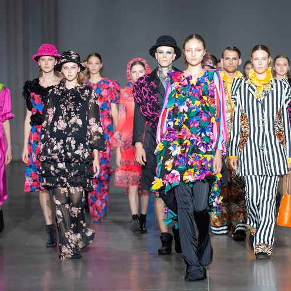
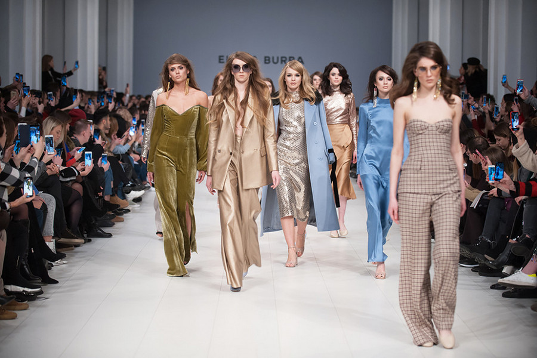
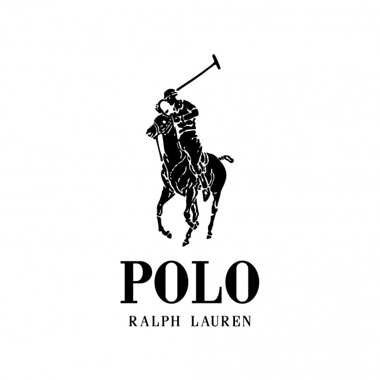

News
For the eight times we presented the designers with the Vegan Fashion Awards. This year 15 models of vegan mods have taken away from the city in fifteen nominations.

Vegan fashion
“Vegan fashion will lay its own way for the suspension and that it is more relevant, if not earlier. It is important for companies to expand the assortment of vegan products and say goodbye to the harsh methods of making food. "

Card title
This is a wider card with supporting text below as a natural lead-in to additional content. This card has even longer content than the first to show that equal height action.

Versace became internationally renowned for ultra-glamorous creations as well as spectacular theatrical costumes and innovative menswear design.

Fashion anarchist and feminist Yves Saint Laurent dressed his muses in tuxedos, trousers, and see-through blouses. He invented the trapeze dress and 'safari' style; he brought turtlenecks and camouflage into vogue.

Polo was founded in 1976 by Gordon Joffe along with two former Monatic executives, Ronnie Lange and Freddie Barnet, and Stuart Shub from Rex Trueform. His factory L'uomo in Lansdowne produced the first Polo shirts with the
trademark square button. The Polo shirt soon became synonymous with the best of quality.